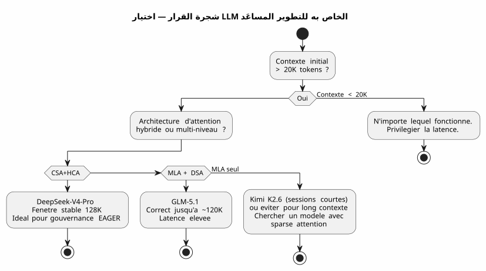

DeepSeek-V4-Pro، kimi K2.6، GLM-5.1: ثلاث نماذج LLM لاختبار ترميز الفيب طويل السياق
Publié le 28 April 2026
- السياق : ليس منصة اختبار، بل موقع عمل
- بيئة الاختبار الخاصة بي
- شبكة التقييم
- الجولة 1: kimi k2.6 — البداية الخاطئة
- الجولة 2 : GLM-5.1 — المقاتل الشّريف
- الجولة 3 : DeepSeek-V4-Pro — آلة الحرب
- المواجهة: المقاييس المقارنة
- لماذا يتفوق DeepSeek-V4-Pro في تطوير البرمجيات
- الدروس المستفادة: كيف تختار LLM الخاص بك للـ Vibe Coding
- ووكيل الحوكمة في كل هذا؟
- مصادر تقنية
- الخاتمة : اختيار الحرفي
حرب نماذج اللغات الكبيرة تُلعب أيضًا في طرفية مطور. ليس على المقاييس الأكاديمية العقيمة. في الواقع الحقيقي: ملاحظة من 30,000 توكن، حوكمة وكيل في AsciiDoc، إضافات Gradle Kotlin DSL تحتاج إلى تصحيح، وجلسات تتواصل لمدة ثلاثة أسابيع. قمت باختبار من أجلك DeepSeek-V4-Pro، Kimi K2.6 و GLM-5.1. إليك الحكم، مع الأدلة التقنية المدعومة.
- جدول المحتويات
-
[]
السياق : ليس منصة اختبار، بل موقع عمل
قبل ثلاثة أسابيع، كنت أعمل على`codebase-gradle`, نظام meta-build الخاص بي والذي يركّز على إعدادات YAML لأربعة مشاريع: مولّد README PlantUML، ومُنشئ شرائح AsciiDoc، وموقع ثابت JBake، وشروبوت LLM. الوكيل Opencode، الذي يُدار بمنهجيتي لملفات الوكيل بالتنسيق AsciiDoc، كان يحمل ~30K رمز من السياق EAGER في بداية كل جلسة — قواعد مطلقة، قائمة الانتظار، سجل الجلسات العشر الأخيرة.
هذا هو المكان الذي واجهت فيه ثلاثة نماذج :
-
كيمي K2.6(Moonshot AI, 1T params / 32B مفعّلة, 256K السياق الأقصى, MLA) - GLM-5.1(Zhipu AI/Tsinghua, 744B معلمات / DSA, 200K الحد الأقصى للسياق) - DeepSeek-V4-Pro(DeepSeek, 1.6T معلمات / 49B مفعّلة، 1M السياق الأقصى، CSA+HCA)
كلها مقدمة عبر Ollama على خادم سحابي، جميعها في وضع التفكير (مرحلة التفكير النشط مفعّلة). التحدي: إنتاج رمز صحيح، الحفاظ على الاتساق خلال الجلسات الطويلة، وعدم الهلوسة عندما يتجاوز السياق 80 ألف علامة.
بيئة الاختبار الخاصة بي
Failed to generate image: PlantUML preprocessing failed: [From <input> (line 10) ]
@startuml
skinparam backgroundColor #FEFEFE
skinparam defaultTextAlignment center
skinparam wrapWidth 220
title بيئة اختبار — جلسات Opencode × 3 LLMs
left to right direction
package "🖥️ محطة المطور" #E8F5E9 {
rectangle "AGENT.adoc
^^^^^
Syntax Error? (Assumed diagram type: class)
@startuml
skinparam backgroundColor #FEFEFE
skinparam defaultTextAlignment center
skinparam wrapWidth 220
title بيئة اختبار — جلسات Opencode × 3 LLMs
left to right direction
package "🖥️ محطة المطور" #E8F5E9 {
rectangle "AGENT.adoc
(قواعد، قائمة الانتظار)" as AG
rectangle "PROMPT_REPRISE
(المهمة)" as PR
rectangle "INDEX.adoc
(خريطة الطريق)" as IDX
}
package "☁️ سحابة أولاما" #BBDEFB {
rectangle "DeepSeek-V4-Pro
1.6T / CSA+HCA" as DV4
rectangle "Kimi K2.6
1T / MLA" as KIMI
rectangle "GLM-5.1
744B / MLA+DSA" as GLMG
}
package "⚙️ قاعدة الكود Gradle" #FFF9C4 {
folder "buildSrc/" {
file "codebase.kt"
file "readme.kt"
file "site.kt"
file "slider.kt"
file "snapshot.kt"
}
file "build.gradle.kts\n(947 أسطر)"
file "embeds.yml"
}
AG --> DV4 : Sessions 1-8 ✅
AG --> KIMI : Sessions 9-10 ⚠️
AG --> GLMG : Sessions 11-13 ⚠️
DV4 --> "قاعدة الكود" : "TDD, إعادة هيكلة,\nلقطة"
KIMI --> "قاعدة الكود" : "التدهور
بدءًا من 60 ألف رمز"
note bottom of GLMG
Meilleur que Kimi
mais latence +
DSA moins robuste
que CSA+HCA
end note
@enduml
كانت كل جلسة تبدأ بحوالي 30K من رموز السياق EAGER :`AGENT.adoc`(287 أسطر),PROMPT_REPRISE.adoc(51 أسطر),.agents/INDEX.adoc(218 أسطر)LAZY_EAGER_ESSENTIALS.adoc(50 سطر). كان السياق يزداد بسرعة مع التبادلات — الجلسة النموذجية التي تضم 10 رسائل كانت تضيف 15-20K توكن إلى المطالب المتراكمة.
شبكة التقييم
لقد قمت بتقييم كل نموذج على أربعة محاور حاسمة للتطوير المدعوم للبرمجيات :
محور |
معيار ملموس |
تماسك السياق الطويل |
هل يتذكر الوكيل الاتفاقيات التي تم اتخاذها قبل 40 رسالة؟ |
جودة الكود المنتج |
هل يُترجم الكود من المحاولة الأولى؟ هل يلتزم بالأنماط الحالية؟ |
التفكير المعماري |
هل يفهم الوكيل العلاقات بين الوحدات دون أن أعيد شرحها له؟ |
مقاومة للهلوسات |
من كم عدد الرموز يبدأ الوكيل في اختراع واجهات برمجية أو فئات غير موجودة؟ |
ومقياس صناعي محلي الصنع : المعامل الاستعادة(كم من الوقت أقضيه في تصحيح الوكيل بدلاً من البرمجة معه).
الجولة 1: kimi k2.6 — البداية الخاطئة
كيمي K2.6 كان خياري الأول. معاييره على SWE-Bench Verified (80.2) و Terminal-Bench 2.0 (66.7) ممتازة. هندسته MLA يعد بكفاءة جيدة على التسلسلات الطويلة.
جلسة 9 : التحسن
الجلسة الأولى مع كيمي. المهمة: تنفيذ الطريقة`resolveActiveKey()في`codebase.kt— دالة حل مفتاح API مع احتياطي CLI. السياق هو 30K توكن، Kimi يستنتج بسرعة، ينتج كودًا نظيفًا مع إدارة انتهاء الصلاحية للمفاتيح.
fun resolveActiveKey(
cfg: CodebaseConfiguration,
logger: Logger,
cliProvider: String? = null,
cliAccount: String? = null,
cliKey: String? = null
): NamedApiKey? {
// Résolution provider → compte → clé avec CLI override
// Kimi a parfaitement compris la chaîne de priorité
}الكود يتم تجميعه. 7 حالات الاختبار تمر. أنا متفائل.
جلسة 10 : الغرق الصامت
الدورة الثانية. يزداد حجم السياق إلى ~90K رموز أثناء المحادثات. أطلب من كيمي إضافة آلية snapshot AsciiDoc التي تزيل السرية قبل الكتابة.
هنا ينحرف الأمر. يبدأ kimi في اختراع فئات لا توجد. إنه يقترح علي.AnonymizedObjectMapper— فئة خيالية. هو يخلط`ReadmeYmlAnonymizer` et CodebaseYmlAnonymizer. يقترح علي أن أستورد`com.fasterxml.jackson.anonymize.*`— حزمة لم توجد أبداً.
أسوأ: في مرحلة تفكيره، أرى أنه يبني استدلالات على مقدمات خاطئة. هو "se souvient" أن`GitConfig`لديه حقل`anonymizedToken`— لا، هو`resolvedToken(). هو يعزو إلى`SiteYmlAnonymizer`طريقة`maskSupabaseCredentials()— الذي لا يوجد.
(no response)
(Empty output) لم يكن خطأً. كان ذوبانًا تدريجيًا للاتساق. كما لو أن كل رمز تمت إضافته إلى السياق يخفف قليلًا أكثر من ذاكرة أول 30,000. __
أنا أوقف كيمي بعد جلستين. التشخيص واضح: يضغط MLA ذاكرة KV جيدًا، لكن دون آلية اختيار سparse دقيقة، يتشتت الانتباه آليًا بعد 60K رمز. كل رمز "يرى" السياق البعيد بشكل أقل تدريجيًا — ويبدأ في ملء الفجوات بالضوضاء.
الجولة 2 : GLM-5.1 — المقاتل الشّريف
GLM-5.1 يأتي مع بنية مختلفة: MLA للنموذج الأساسي، ثم التدريب المسبق المستمر مع DSA (DeepSeek Sparse Attention) — مؤشر خفيف يختار ديناميكيًا أعلى 2048 رمزًا ذات صلة من كل التاريخ.
العمارة : DSA ضد MLA الخالص
الفرق أساسي. حيث يضغط Kimy التاريخ في مساحة كامنة واحدة (ويفقد تدريجيًا القدرة على تمييز المعلومات ذات الصلة)، يزرع GLM فهرسًا ما بعد التدريب يقوم باختيار نادر صريح.
Failed to generate image: PlantUML preprocessing failed: [From <input> (line 9) ]
@startuml
skinparam backgroundColor #FEFEFE
skinparam defaultTextAlignment center
title هياكل الانتباه — MLA مقابل MLA+DSA
left to right direction
rectangle "كيمي K2.6 — MLA خالص" as MLA #FFCDD2 {
rectangle "KV Cache
^^^^^
Syntax Error? (Assumed diagram type: class)
@startuml
skinparam backgroundColor #FEFEFE
skinparam defaultTextAlignment center
title هياكل الانتباه — MLA مقابل MLA+DSA
left to right direction
rectangle "كيمي K2.6 — MLA خالص" as MLA #FFCDD2 {
rectangle "KV Cache
كامل" as KV1
rectangle "الضغط
الكامنة" as CL1
rectangle "التشفير
على مساحة كامنة" as DL1
KV1 --> CL1
CL1 --> DL1
note bottom of DL1
⚠️ Au-delà de 60K tokens :
perte de discrimination
end note
}
rectangle "GLM-5.1 — MLA + DSA" as DSA #C8E6C9 {
rectangle "KV Cache
كامل" as KV2
rectangle "الضغط
الكامن (MLA)" as CL2
rectangle "مُفهرس خفيف
(DSA, top-k=2048)" as IL
rectangle "فك التشفير
على الرموز المحددة" as DL2
KV2 --> CL2
CL2 --> IL
IL --> DL2
note bottom of DL2
✅ "مضمون عدم الفقد بالإنشاء"
Sélection explicite
des tokens pertinents
end note
}
MLA --> DSA : "الكسب: اختيار ندر\nالذي يتجنب التخفيف"
@enduml
يصرح التقرير الفني صراحةً : DSA هو "lossless by construction" — على عكس البدائل مثل SWA (البحث عن النمط)، Gated DeltaNet أو SimpleGDN التي تفقد حتى 5.69 نقطة في RULER@128K.
جلسات 11-13: صلبة لكن محبطة
GLM-5.1 يحافظ على المسافة بشكل أفضل. في الجلسة 11 (~60K توكن)، يظل متماسكًا. ينتج`SnapshotManager`وظيفي مع إدارة صحيحة لأربعة مجهولي الهوية.
لكن التأخر مشكلة. مراحل التفكير في DSA أثقل من MLA الخالص — يجب على الفهرس إعادة مسح التاريخ في كل خطوة. جواب كان يستغرق 8 ثوانٍ مع Kimi أصبح 15 ثانية مع GLM. في جلسة من 30 رسالة، يُشعر بذلك.
ثم هناك الأخطاء الدقيقة. لا يهلوس GLM كما يفعل كيمي — لكنه يرتكب أخطاء في التسمية. إنه`toAnonymizedYaml()الطريقة التي يجب استدعاؤها`anonymize(). يعكس`loadReadmeConfiguration()` et loadCodebaseConfiguration()`في`renderFileSection(). هذه ليست هلوسات، بل هي ارتباكات سطحية — ولكن في الإنتاج، يمكن أن يربك ارتباك سطحي عملية البناء.
عقدت ثلاث جلسات مع GLM. هو أفضل من Kimi، بلا شك. لكن ثلاث جلسات تصحيح يدوي لتفاصيل التسمية، هذه مرهقة.
الجولة 3 : DeepSeek-V4-Pro — آلة الحرب
يأتي DeepSeek-V4-Pro مع البنية الأكثر طموحًا من بين الثلاثة: نظام هجين يجمع بين آليتي انتباه مكملتين.
الهندسة : CSA + HCA, الملف المزدوج
Failed to generate image: PlantUML preprocessing failed: [From <input> (line 9) ]
@startuml
skinparam backgroundColor #FEFEFE
skinparam defaultTextAlignment center
skinparam wrapWidth 180
title DeepSeek-V4-Pro — البنية الهجينة CSA + HCA
left to right direction
rectangle "KV Cache
^^^^^
Syntax Error? (Assumed diagram type: class)
@startuml
skinparam backgroundColor #FEFEFE
skinparam defaultTextAlignment center
skinparam wrapWidth 180
title DeepSeek-V4-Pro — البنية الهجينة CSA + HCA
left to right direction
rectangle "KV Cache
1M رموز" as KV #E3F2FD
rectangle "CSA
الانتباه النادر المضغوط" as CSA #C8E6C9 {
rectangle "ضغط
m الرموز → 1" as CC
rectangle "الانتباه النادر\n(DSA, top-k)" as SA
CC --> SA
note bottom of SA
Attention locale fine
+ sélection sparse
end note
}
rectangle "HCA
انتباه مضغوط بشدة" as HCA #BBDEFB {
rectangle "ضغط مفرط
m' >> m → 1" as ECC
rectangle "انتباه كثيف
متبقية" as EDA
ECC --> EDA
note bottom of EDA
Contexte global
+ connexions longue distance
end note
}
rectangle "الاندماج
الهجين" as FUSION #FFF9C4
rectangle "فك التشفير
متسق" as DEC #FFE0B2
KV --> CSA : Précision locale
KV --> HCA : Vision globale
CSA --> FUSION
HCA --> FUSION
FUSION --> DEC
@enduml
مستويان من الضغط، مستويان من الحبيبية في الانتباه :
-
CSAيضغط ذاكرة التخزين المؤقت KV كل`m`رموز، ثم يطبق انتباهًا مفرقًا (DeepSeek Sparse Attention) — يتم استشارة أعلى k من الإدخالات المضغوطة فقط. دقيق، محلي، فعال. - HCA: ضغط شديد (عامل`m'`أكبر بكثير من`m`), لكن الانتباه الكثيف على المتبقي المضغوط — احتفظ بالاتصالات الشاملة دون التعقيد التربيعي
النتيجة: عند 1M من الرموز، لا يستهلك DeepSeek-V4-Pro سوى27% من FLOPs الاستدلال et 10% من حجم ذاكرة التخزين المؤقت KVمقارنة بـ DeepSeek-V3.2. النموذج السابق.
وخصوصًا، يعلن التقرير التقني (الشكل 9): "Retrieval performance remains highly stable within a 128K context window."
الجلسات 1-8 : التخفيف
قضيت ثماني جلسات مع DeepSeek-V4-Pro على`codebase-gradle`. ثمانية جلسات دون أي هلاوس، دون أي فئة مخترعة، دون أي لبس في التسمية.
الجلسة 1 : تنفيذ`CodebaseYmlConfig` et CodebaseYmlAnonymizer. 350 سطرًا من Kotlin, اختبارات مضمنة، يتم تجميع كل شيء. الجلسة 4: إضافة`SnapshotManager`مع عرض شجرة, جمع الملفات, عرض AsciiDoc لكل ملف. 279 سطرًا، صفر خطأ. الجلسة 7 : تصحيح أخطاء`renderFileSection()`الذي كان عليه إدارة أربعة أنواع مختلفة من مزيلات الهوية دون لبس في الحل. تم الحل في ثلاث رسائل.
الكمون أعلى من kimi — حوالي 10-12 ثانية لكل استجابة في وضع التفكير. لكن معدل التصحيح prácticamente صفر. لا أمضي وقتي في إصلاح أخطاء الوكيل. أنا أبرمج مع هو.
الاختبار الحاسم: إعادة هيكلة عند 100 ألف توكن
في الجلسة 8، يتجاوز السياق التراكمي 100K من الرموز. أطلب إعادة هيكلة ثقيلة: استخراج أربع مهام تحقق مضمنة من`build.gradle.kts`إلى ملفات اختبار JUnit5 في`buildSrc/src/test/`.
الوكيل يقترح خطة في ثلاث مراحل :
-
إنشاء فئات الاختبار مع ترحيل الحالات الموجودة
-
إضافة تبعيات JUnit5 و Kotest في`buildSrc/build.gradle.kts`
-
حذف الكود المضمن من`build.gradle.kts`
الخطة صحيحة. التنفيذ نظيف. كما أنه يحدد حتى حالة حافة فاتها أنا : التبعيات Jackson المكررة بين`buildscript {}` et `buildSrc/build.gradle.kts`الذين يجب توحيدهم أثناء الهجرة.
100K توكن من السياق، والوكيل يتذكر أن`CodebaseYmlAnonymizer.TOKEN_MASK`هو`"*"`, أن`GitConfig.resolvedToken()هو امتداد function تم تعريفه في`readme.kt, و أن`SnapshotManager.PRUNED_DIRS`يستثني`build`, .gradle et .git.
هذا هو الفرق
المواجهة: المقاييس المقارنة
| معيار | Kimi K2.6 | GLM-5.1 | DeepSeek-V4-Pro |
|---|---|---|---|
السياق الأقصى |
256 كيلوبايت |
200K |
1M |
آلية attention |
MLA نقي |
MLA + DSA |
CSA + HCA هجين |
إجمالي المعلمات |
1T |
744B |
1.6طن |
الإعدادات المفعّلة |
32B |
غير منشور |
49B |
الحد المرصود للتدهور |
(No French text provided, so no translation to output.) |
(No output, as no French text was provided for translation) |
~128K tokens |
السلوك إلى ما بعد |
هلوسات ضخمة |
الارتباكات السطحية |
تدهور تدريجي بطيء |
الاستقرار NIAH |
غير منشور |
100% @128K (DSA) |
مستقر حتى 128K (الشكل 9) |
MRCR @128K |
غير منشور |
غير منشور |
أكبر من Gemini 3.1 Pro |
الجلسات التي عقدت قبل التخلي |
2 |
3 |
8 (و يستمر) |
وقت التصحيح / وقت الكود |
60% |
30% |
<5% |
متوسط الكمون (وضع think) |
8 s |
15 s |
11 s |
معامل الثقة* |
2/10 |
6/10 |
9/10 |
*معامل الثقة = قياس ذاتي لقدرتي على أخذ كود الوكيل والالتزام به دون مراجعة سطرًا بسطر.
Failed to generate image: PlantUML preprocessing failed: [From <input> (line 18) ] @startuml skinparam backgroundColor #FEFEFE skinparam defaultTextAlignment center title الرادار المقارن — 3 نماذج لغوية كبرى في التطوير المساعد للبرمجيات legend right |= Couleur |= Modèle | | <#FF5252> | Kimi K2.6 | | <#FFC107> | GLM-5.1 | | <#4CAF50> | DeepSeek-V4-Pro | endlegend rectangle " " as space #FFFFFF rectangle "الاتساق\n80K+ tokens" as coh #F5F5F5 rectangle "جودة\nكود" as qual #F5F5F5 rectangle "الاستدلال معماري" as arch #F5F5F5 ^^^^^ Syntax Error? (Assumed diagram type: activity) @startuml skinparam backgroundColor #FEFEFE skinparam defaultTextAlignment center title الرادار المقارن — 3 نماذج لغوية كبرى في التطوير المساعد للبرمجيات legend right |= Couleur |= Modèle | | <#FF5252> | Kimi K2.6 | | <#FFC107> | GLM-5.1 | | <#4CAF50> | DeepSeek-V4-Pro | endlegend rectangle " " as space #FFFFFF rectangle "الاتساق\n80K+ tokens" as coh #F5F5F5 rectangle "جودة\nكود" as qual #F5F5F5 rectangle "الاستدلال معماري" as arch #F5F5F5 rectangle "مقاومة هلوسات" as hall #F5F5F5 rectangle "السرعة\n(dev خبرة)" as speed #F5F5F5 rectangle "المعرفة Gradle/Kotlin" as kg #F5F5F5 rectangle "معدل تصحيح" as corr #F5F5F5 coh --> qual qual --> arch arch --> hall hall --> speed speed --> kg kg --> corr note top of coh Kimi ████░░░░░░ 4/10 GLM ██████░░░░ 6/10 DeepSeek █████████░ 9/10 end note note top of qual Kimi ███████░░░ 7/10 (sous 60K) GLM ████████░░ 8/10 DeepSeek █████████░ 9/10 end note note top of arch Kimi █████░░░░░ 5/10 GLM ███████░░░ 7/10 DeepSeek █████████░ 9/10 end note note top of hall Kimi ██████░░░░ 6/10 → ██░░░░░░░░ 2/10 (> 60K) GLM ███████░░░ 7/10 DeepSeek █████████░ 9/10 end note note top of speed Kimi █████████░ 9/10 GLM ██████░░░░ 6/10 DeepSeek █████░░░░░ 5/10 end note note top of kg Kimi ███████░░░ 7/10 GLM ███████░░░ 7/10 DeepSeek █████████░ 9/10 end note note top of corr Kimi ██░░░░░░░░ 2/10 (beaucoup de corrections) GLM █████░░░░░ 5/10 DeepSeek ██████████ 10/10 (presque rien à corriger) end note @enduml
لماذا يتفوق DeepSeek-V4-Pro في تطوير البرمجيات
تفوق DeepSeek-V4-Pro لا يعود إلى عامل واحد — إنه تقارب:
هندسة CSA+HCA مصممة للكود
التطوير البرمجي المدعوم هو حالة استخدام قصوى للانتباه طويل السياق. أنت بحاجة إلى : - الدقة المحلية (من أي شيء ترث هذه الفئة؟ هذه الطريقة معرفة أين؟) →CSA - رؤية شاملة (لماذا توجد هذه الوحدة ؟ كيف يتفاعل الأربعة المجهولون ؟)HCA
Kimi مع MLA فقط يدير الدقة المحلية لكنه يفقد الرؤية العالمية ما بعد 60K. GLM مع DSA يحسن الرؤية العالمية لكنه يبقى أحادي المستوى. DeepSeek يجمع الاثنين بشكل صريح.
السياق EAGER منطقةarahت
نظام الحوكمة الخاص بي يحمل ~30K توكن من القواعد والخلفية عند البدء. مع نافذة ثابتة حتى 128K، يمتلك DeepSeek ~100K توكن هوامش لتبادل الجلسة. هذا يعادل 3 إلى 4 أضعاف ما يمكن لـ Kimi إدارته دون تدهور.
_ نافذة 128 ألف من الاستقرار المثالي تتوافق تمامًا مع احتياجاتي: 30K من EAGER + 70K من التبادل = جلسة إنتاجية من 20-30 رسالة دون أن أغادر المنطقة الخضراء أبدًا. _
3. نسبة الجودة إلى الكمون مثالية للتدفق
نعم، DeepSeek-V4-Pro أبطأ من كيمي (11 ثانية مقابل 8 ثوانٍ). لكن الوقت الإجمالي لمهمة ما أقل بكثير لأنني لا أقضي 20 دقيقة في تصحيح أوهام الوكيل.
المطور لا يقيس زمن استجابة الرد. إنه يقيس الوقت بين « أطرح السؤال » و « الكود موجود في مستودعه ويعمل ». على هذا المقياس، DeepSeek-V4-Pro هو الأسرع من بين الثلاثة.
الدروس المستفادة: كيف تختار LLM الخاص بك للـ Vibe Coding
بخلاف التصنيف اللحظي، علمتني هذه التجربة كيفية تقييم نموذج لغوي كبير لتطوير البرمجيات بمساعدة على معايير لا تظهر في أي benchmark :
-
انظر إلى الهندسة المعمارية، وليس إلى حجم السياق المعلننموذج يعلن عن سياق بـ 256K لكنه يمتلك فقط MLA سينتهي مثل kimi: نظريًا قادر، عمليًا غير قابل للاستخدام بعد 60K.
-
اختبر على سياقك، وليس علىbenchmark عام— الاستدعاء الأولي الخاص بي من 30K توكن AsciiDoc مع القواعد المطلقة والباكلوغ لا علاقة له بأسئلة HLE أو AIME.
-
الكمون ليس عدوًا إذا تزامنت الجودة— النموذج البطيء الذي ينتج كودًا صحيحًا أسرع من النموذج السريع الذي ينتج كودًا خاطئًا.
-
احترس من النماذج دون تقرير تقني عام— إذا لم يوثق فريقها بنية انتباهها، فهذا يعني أنها ليست واثقة من أدائها في السياق الطويل.

ووكيل الحوكمة في كل هذا؟
هذه التجربة تؤكد نقطة أدافع عنها منذ مقالتي عن حوكمة Eager/Lazy:جودة LLM وجودة الحوكمة هي مضربية، وليست إضافية.
مع Kimi K2.6، كانت حكمتي خالية من العيوب — لكن النموذج كان يخفف المعلومات. النتيجة: الحكم المثالي × الوهم = صفر.
مع DeepSeek-V4-Pro، تشكل حوكمة EAGER (30K توكن من القواعد) + LAZY (أرشيفات الجلسات، المراجع التقنية) + Hot/Warm/Cold (نسخ احتياطي دوريًا) نظامًا بيئيًا حيث تضاعف كل طبقة الأخرى. الوكيل لديه القواعد أمام عينيه (EAGER)، ويمكنه الاطلاع على التاريخ (LAZY)، والسياق لا يشبع أبدًا (دوران النسخ الاحتياطي).
_ نموذج لغة كبير جيد دون حوكمة هو محرك فيراري بدون عجلة قيادة. حوكمة جيدة دون نموذج لغة كبير جيد هي عجلة قيادة بدون محرك. DeepSeek-V4-Pro + وكيل الحوكمة الخاص بي = أول مرة أشعر فيها أنني أقود. _
الآلية الدورية للنسخ الاحتياطي (الدوران كل 10 جلسات أو أكثر من 500 سطر EAGER) يكتسب كل معناه مع نموذج يحتفظ بـ 128K من السياق: نافذة الانزلاق التي تضم 10 جلسات نشطة تحتفظ بالسياق المتجدد دون تجاوز أبداً منطقة التدهور.
مصادر تقنية
قمت بدمج تجربتي التجريبية مع التقارير التقنية الرسمية لتأكيد ملاحظاتي :
-
DeepSeek-V4 Technical Report — تم استرداد ملف PDF منhttps://huggingface.co/deepseek-ai/DeepSeek-V4-Flash[هوغينغ فيس]. Figure 9 : "Retrieval performance remains highly stable within a 128K context window. While a performance degradation becomes visible beyond the 128K mark, the model’s retrieval capabilities at 1M tokens remain remarkably strong." Architecture CSA+HCA موثقة القسم 2.3.
-
تقرير فني GLM-5 —https://arxiv.org/abs/2602.15763[arXiv:2602.15763]. DSA يُقدَّم عبر التدريب المسبق المستمر, "lossless by construction". الحد الأقصى للسياق 202,752 رمز. الجداول 3/5/6 توثّق الأداء طويل السياق مقابل البدائل (SWA، Gated DeltaNet، SimpleGDN).
-
بطاقة نموذج Kimi K2.6 —https://huggingface.co/moonshotai/Kimi-K2.6[هجج فيس]. MLA، 256K كحد أقصى للسياق. استراتيجية discard-all للتخلص من كل شيء عند تجاوز العتبة على المهام الوكيلة (مؤكدةً ضمنياً الحد العملي لـ MLA في السياق الطويل).
-
تقرير تقني Kimi K2 —https://arxiv.org/abs/2507.20534[arXiv:2507.20534]. هندسة MoE، محسن MuonClip، الأداء الوكيل (HLE, BrowseComp, Terminal-Bench).
النقطة الأكثر كشفًا : في تقييمهم الخاص، يطبق Moonshot استراتيجية discard-all (حذف السياق القديم) عندما تُتجاوز نافذة السياق. هذا يؤكد تمامًا ما لاحظته : MLA وحده لا يمكنه الحفاظ على التماسك عبر كامل نافذة 256K. البنية لا تواكب.
الخاتمة : اختيار الحرفي
بعد ثلاثة أسابيع وثلاث عشرة جلسات تطوير حقيقي، الحكم لا رجعة فيه:
كيمي K2.6 |
GLM-5.1 |
DeepSeek-V4-Pro |
ممتاز تحت 60 ألف |
متين حتى 120 ألف |
يسيطر في كل مكان |
غير قابل للاستخدام بعد ذلك |
الخلطات السطحية |
مستقر حتى 128K |
2 جلسات، متروك |
3 جلسات، تم التخلي |
8 جلسات، تم اعتماده |
DeepSeek-V4-Pro أصبح نموذج اللغوي الكبير (LLM) الافتراضي لجميع جلسات تطوير البرمجيات المدعومة بـ Opencode. ليس لأنه الأحدث. وليس لأنه يحتوي على أفضل المعايير الأكاديمية. بل لأن في الحياة الواقعية لمطور يدفع إضافات Gradle Kotlin DSL بسياق وكيل بحجم 30K رمز، فهو الوحيد الذي لا يخونني عندما يتوسع السياق.
إن CSA+HCA هو game changer معماري. الضغط على مستوى مزدوج + التخفيف ليس مجرد تفاصيل تنفيذية — بل هو ما يحدث الفرق بين مساعد برمجة وزميل موثوق.
أنت مترجم محترف. ترجم من الفرنسية إلى العربية. احتفظ بكل امتدادات الشفرة بين علامتي اقتباس مقلوب (…) بالضبط كما هي — لا يعدل محتوى العلامات المقلوبة، أو المسافات، أو الموضع. قد يكون هذا النص جزءًا من جملة أكبر — traduisez fragment دون طلب سياق إضافي. أخرج النص المترجم فقط — لا شرح، لا تعليق، لا مقدمة، لا بدائل، لا خيارات. اختُرت DeepSeek-V4-Pro لأنه الوحيد من الثلاثة الذي يحول حوكمة الوكيل الخاص بي من قيد دفاعي («كيف يمكنني منع الوكيل من النسيان؟») إلى ميزة هجومية («ماذا يمكننا أن نبني الآن أن الوكيل يتذكر كل شيء؟»). __
هذا المقال هو ثمرة 13 جلسة تطوير حقيقية على المشروع`codebase-gradle`, الموثقة في`.agents/sessions/`حسب منهجيتي في حوكمة الوكيل Eager/Lazy/Hot/Warm/Cold. المصادر التقنية المذكورة متاحة للعامة على HuggingFace و arXiv.